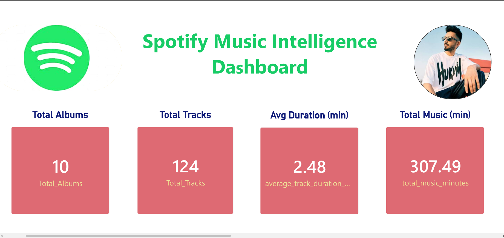

An end-to-end analytics platform that extracts Spotify album and track data, processes it through a Python ETL pipeline, stores it in MySQL, analyzes it with SQL, and visualizes insights using Power BI.

Albums
Tracks
Avg Duration
Total Minutes
Built a complete music analytics workflow from live Spotify API extraction to dashboard reporting. The project demonstrates API integration, ETL, SQL analytics, relational database loading, and business intelligence dashboarding.
Spotify API → Python ETL → CSV staging → MySQL → SQL views → Power BI
Python, Pandas, Spotipy, MySQL, SQL, Power BI, GitHub
KPI cards, album analytics, listening time analysis, explicit content split, and longest tracks.
Transforms raw music metadata into clear insights for artist, album, and track-level analysis.